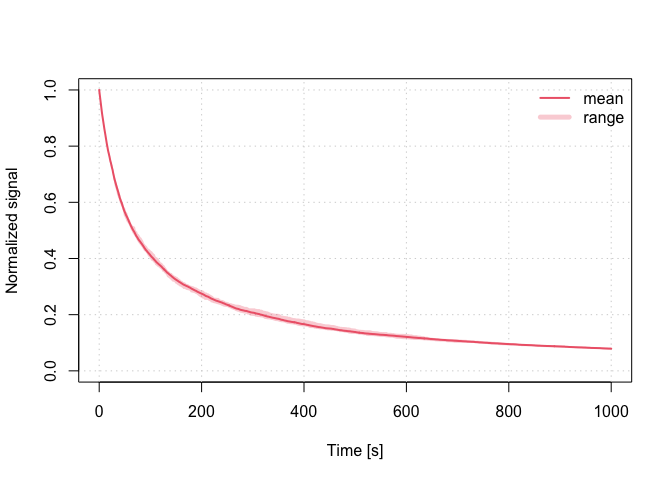

The R package RLumCarlo provides a collection of R functions modelling luminescence production in isolators and semiconductors for various stimulation modes using Monte Carlo methods.


Installation
ii. Install the package from GitHub
if(!require("devtools")) install.packages("devtools") devtools::install_github("R-Lum/RLumCarlo@master")
Examples
run_MC_CW_IRSL_TUN(A = 0.12, rho = 0.003, times = 0:1000) %>% plot_RLumCarlo(norm = TRUE, legend = TRUE)

Supported models
| TRANSITION | BASE MODEL | IRSL | OSL | LM-OSL | TL |
|---|---|---|---|---|---|
| Delocalised | OTOR | FALSE | TRUE | TRUE | TRUE |
| Localised | GOT | TRUE | FALSE | TRUE | TRUE |
| Excited state tunnelling | LTM | TRUE | FALSE | TRUE | TRUE |
License
This program is free software: you can redistribute it and/or modify it under the terms of the GNU General Public License as published by the Free Software Foundation, either version 3 of the License, or any later version.
This program is distributed in the hope that it will be useful, but WITHOUT ANY WARRANTY; without even the implied warranty of MERCHANTABILITY or FITNESS FOR A PARTICULAR PURPOSE. See the GNU General Public License for more details.
Funding
The development of RLumCarlo benefited from the support by various funding bodies:
The initial work by Johannes Friedrich, Sebastian Kreutzer and Christoph Schmidt was supported by the DFG (2015–2018, SCHM 3051/4-1, “Modelling quartz luminescence signal dynamics relevant for dating and dosimetry”, SCHM 3051/4-1).
Later financial support was secured through the project ‘ULTIMO: Unifying Luminescence Models of quartz and feldspar (German Academic Exchange Service) DAAD: Deutscher Akademischer Austauschdienst DAAD PPP USA 2018, ID: 57387041)’.
The work of Sebastian Kreutzer as maintainer of the package was supported by LabEx LaScArBx (ANR - n. ANR-10-LABX-52) between 2017 and 2019.
From 2020, Sebastian Kreutzer received funding from the European Union’s Horizon 2020 research and innovation programme under the Marie Skłodowska-Curie grant agreement No 844457 (project: CREDit).